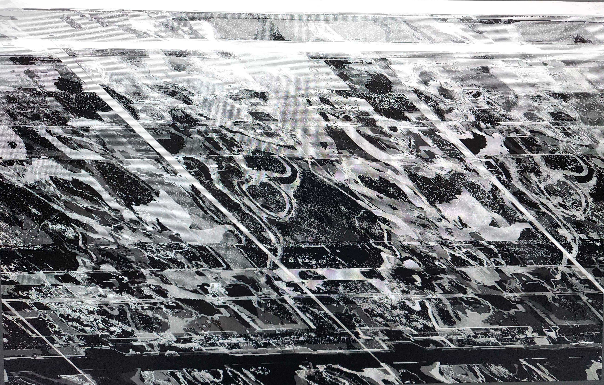

Glitch Art
Resize this responsive page to see the effect!



The first image shows a branch of flowers, uneven in color and scattered apart. The second image depicts a flower, but it’s deformed and distorted so much that it appears to be screaming rather than simply existing. The third image portrays a cat, partially complete, exaggerated, and unclear. Through this series, I want to explore the idea that existence can be seen as an honor, but that perception depends on perspective. Not everyone views existence in a positive light.